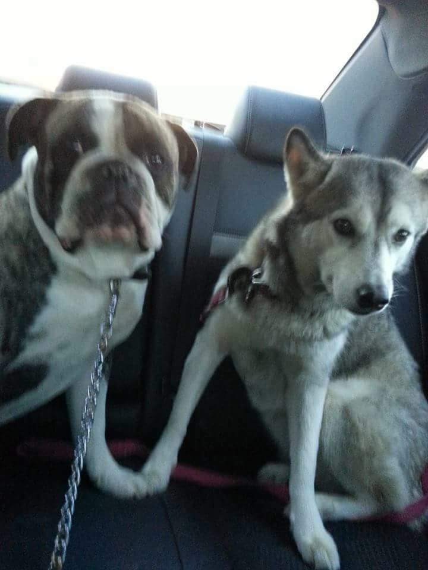

Pictures of Things I Like
-
Puppy Picture (RIP Trinity)
This is Trinity, my late Siberian Husky. She loved food and tummy rubs.
-
Dog Pictures (RIP Trinity)

This is a picture of adult Trinity and Maury, a bulldog. He mostly sleeps and lazes around the house.
-
"Tsukemen" Ramen

This is a picture of "Tsukemen", or dipping ramen, from Tsujita in Los Angeles. It's one of my favorite dishes. The flavor can be described as savory.
-
BBQ from San Antonio
This is a picture of BBQ I had while in San Antonio. I highly recommend the brisket grilled cheese sandwich.
-
Texas Capitol
This is a picture of the Texas State Capitol. It's far more well kept than the rest of Austin.